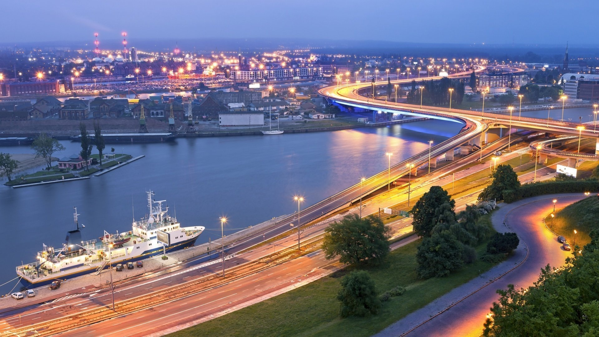

Miasto na prawach powiatu położone w południowej Polsce nad Wisłą,
drugie co do liczby mieszkańców i powierzchni miasto kraju. Formalna
stolica Polski do 1795 roku i miasto koronacyjne oraz nekropolia
królów Polski. Od 1000 roku nieprzerwanie stolica diecezji
krakowskiej (jednej z pięciu w ówczesnej Polsce), a od 1925
archidiecezji i metropolii.
200 comments
523 likes
Warszawa
Stolica Polski i województwa mazowieckiego
Największe miasto w kraju, położone w jego centralnej części, na
Nizinie Środkowomazowieckiej, na Mazowszu, nad Wisłą. Prawa miejskie
uzyskała przed 1300. W 1569 mocą unii lubelskiej Warszawa została
ustanowiona miejscem obrad sejmów Rzeczypospolitej Obojga Narodów.
Od 1573 odbywały się tam wolne elekcje.
343 comments
1221 likes
Poznań
Miasto leżące w zachodniej Polsce
Leży nad rzeką Wartą, u ujścia Cybiny. Historyczna stolica
Wielkopolski, od 1999 r. siedziba władz województwa wielkopolskiego
i powiatu poznańskiego. Piąte pod względem liczby ludności miasto w
Polsce (532 048 mieszkańców w grudniu 2020 r.) i ósme pod względem
powierzchni (261,9 km²). Wysoki standard nauki i życia.
189 comments
487 likes
Kielce
Stolica województwa świętokrzystkiego
Położone w Górach Świętokrzyskich, nad rzeką Silnicą, historycznie w
Małopolsce. Centralny ośrodek aglomeracji kieleckiej, stanowi
regionalne centrum gospodarcze, naukowe, kulturalne oraz
wystawienniczo-targowe. Według danych GUS z 31 grudnia 2021 roku, w
Kielcach mieszkało 192 468 osób.
98 comments
325 likes
Wrocław
Siedziba władz województwa
Jest głównym miastem aglomeracji wrocławskiej, a także największym
miastem leżącym na Ziemiach Odzyskanych. Trzecie pod względem liczby
ludności miasto w Polsce – oficjalnie 672 929 mieszkańców, piąte pod
względem powierzchni – 292,82 km². Z wyliczeń MPWiK i policji
wynika, że rzeczywista liczba ludności Wrocławia wynosi od 825
tysięcy do 1 miliona osób.
226 comments
682 likes
Lublin
Stolica województwa i powiatu lubelskiego
Położone na Wyżynie Lubelskiej nad Bystrzycą, na dwóch odmiennych
obszarach. Część zachodnia ma urozmaiconą rzeźbę terenu. Występują
tam liczne wąwozy, doliny i wzgórza. Część wschodnia jest płaska.
Lublin jest ulokowany ok. 170 km od Warszawy, nieopodal granicy
krain historycznych: Małopolski i Rusi Czerwonej i ok. 100 km od
przejścia granicznego z Ukrainą.
130 comments
552 likes
Gdańsk
Centrum kulturalne i naukowe
Jest to miasto o ponadtysiącletniej historii, którego tożsamość na
przestrzeni wieków kształtowała się pod wpływem różnych kultur.
Gdańsk był również największym miastem Rzeczypospolitej Obojga
Narodów, miastem królewskim i hanzeatyckim, posiadał prawo do
czynnego uczestnictwa w akcie wyboru króla, w XVI w. był
najbogatszym w Rzeczypospolitej.
216 comments
729 likes
Opole
Siedziba władz województwa opolskiego
Jedno z najstarszych miast w Polsce, lokowane na prawie magdeburskim
przed 1217 przez Kazimierza I opolskiego, prawnuka Bolesława III
Krzywoustego. W czasach średniowiecza i renesansu Opole było centrem
handlu dzięki jego położeniu na kilku szlakach handlowych. Miasto
było stolicą księstwa opolsko-raciborskiego.
142 comments
431 likes
Łódź
Siedziba władz województwa łódzkiego
Ośrodek akademicki (19 uczelni), kulturalny i przemysłowy. Przed
przemianami polityczno-gospodarczymi w 1989 r. centrum przemysłu
włókienniczego i filmowego. Od 1910 siedziba diecezji
śląsko-łódzkiej Kościoła Starokatolickiego Mariawitów. Siedziba
rzymskokatolickiej diecezji łódzkiej od 1920 roku, metropolii
łódzkiej od 2004 roku.
120 comments
503 likes

Szczecin
Stolica i największe miasto województwa zachodniopomorskiego
Położone na Pobrzeżu Szczecińskim, nad Odrą i jeziorem Dąbie.
Historyczna stolica księstwa pomorskiego; później w granicach
Szwecji, Brandenburgii, Prus i Niemiec, od 1945 roku należy do
Polski (tym samym stanowi część tzw. Ziem Odzyskanych). Szczecin
jest trzecim pod względem zajmowanej powierzchni.